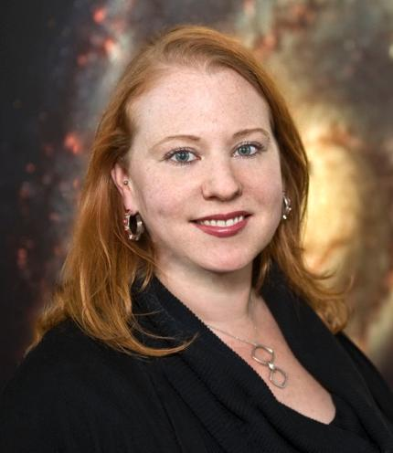
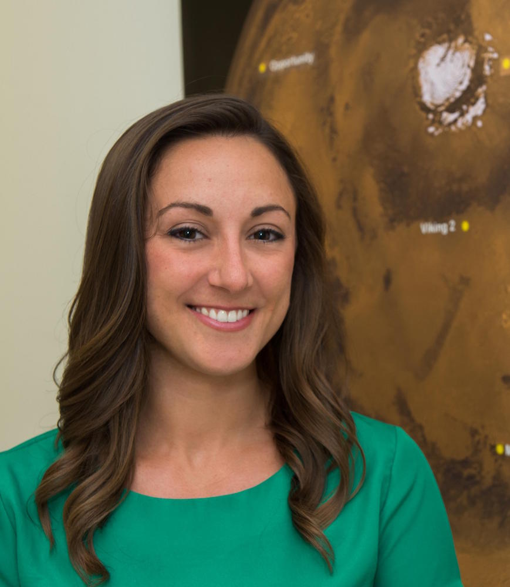
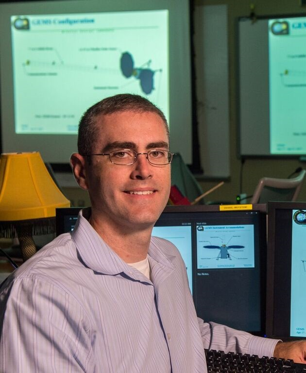

TBD
The information on this website was compiled by volunteers and does not represent the views of NASA or the Goddard administration. You should always check with your lab and/or adviser as some information may be out of date.
Working at NASA Goddard
This page was put together with both new and old employees in-mind! Do you see something incorrect or missing? Let us know.
NASA URLs
Many NASA websites are blocked unless you are on-campus or VPN'd into the network. If you run into a link that is taking you to a 404 or dead page, that may be the issue. If you are on the network and still run into problems then you may have found a dead link. We would appreciate it if you reported those using this form!
Goddard Internal Website
Goddard has an internal website (must be on the network to access). A lot of up-to-date center-specific information can be found on it: internal.gsfc.nasa.gov.
Can't find someone's email or phone number? Try this site.
Other Topics
Click on any of the below topics to learn about them.
Goddard Nomenclature
- Building numbers on the Goddard campus are based on when that building's construction started and has nothing to do with location. For example, B12 is right next to B36 (36 is just much newer).
- Some buildings are attached to one another like the large fabrication buildings: 7, 10, 15, and 29.
Getting to Campus
- There are four primary gates to get onto campus:
- Main Gate - connects the front side of Goddard to Greenbelt Rd. Not too far from the I-495
ramp, good if you are coming-from/going-to the South.
- The Main gate is the only gate you can enter if you do not have a visitor or regular badge: Visit the badging office before coming onto campus.
- "Employee" or North-West Gate - connects the back side of Goddard to the Baltimore-Washington Pkwy with pretty easy access to I-495 if you are coming-from/going-to the North.
- South or "ICESAT Road" Gate - connects the front side of Goddard to Greenbelt Rd. It is good if you are coming-from/going-to Bowie, MD. The Goddard visitor's center is just outside this gate.
- Main Gate - connects the front side of Goddard to Greenbelt Rd. Not too far from the I-495
ramp, good if you are coming-from/going-to the South.
- Check out the living @Goddard page for more info about getting around the DC area.
Goddard Campus Map
- A latest version of the campus map can be found using the links on the left-hand-side this site (VPN or on-campus internet connection is required).
- Here is a pdf that you can access off-campus: GSFC Map (updated 2019).
Campus Points of Interest
- U.S. Post Office in Building 1.
Small post office but you can send packages and letters and even buy stamps.
- The Post Office is open Tuesday thru Thursday from 7:30 to 2:00 pm with a break for the staff from 10:00-10:15.
- The Post Office accepts cash or checks ONLY – no credit or debit cards.
- The Post Office keeps limited change on hand and therefore cannot accept $20 bills for purchases of $10 or less.
- Barney & Bea Rec Center located
behind the child development center (near Building 18).
- The Main Hall can comfortably seat 100 and holds up to 300 for a standing event; our smaller Meeting room can seat 20-25.
- Events at the Rec Center held Monday-Friday between 8:00-5:30 are at NO COST to the user; after-hours and weekend events require a nominal fee.
- Interested in reserving the Rec Center? Just go to http://gewarcreservation.gsfc.nasa.gov (Goddard Network Only) to lock in your date.
- Picnic Pavilion located behind
the child development center (near Building 18).
- The Pavilion has picnic tables that can comfortably seat at least 50 people and in early 2016 the Pavilion will be updated with both new tables and new charcoal grills.
- Free of charge. Interested in reserving the Pavilion? Just go to http://gewarcreservation.gsfc.nasa.gov (Goddard Network Only) to lock in your date.
- NASA Gift Stores - There is a gift shop in Building 1 and the Visitor's Center. NASA employees who show their badge receive a 20% discount. Find hours and other info here.
General Info
- Vending Machine Issue? Check out how to report a malfunction or request a refund here.
On-Campus Options
- Cafe hours can be found here. Nutritional facts and weekly menus can be found here.
- Building 21 Main Cafeteria (Monday - Friday; 7am - 2:30pm). Lots of seating.
- Building 1 Food Court (Monday - Friday; Hours vary): Subway, Starbucks, Hana Noodles & Sushi, ILC Mexican grill. Lots of seating.
- Building 33 Grab & Go Cafe (Monday - Friday; 7:30am - 2:30pm. Limited seating.
- Building 34 Grab & Go Cafe (Monday - Friday; 7:30am - 2:30pm. Limited seating.
- IL Creations offers catering for events, find out more info at the bottom of this page.
Off-Campus Options
- Check out this map for some recommendations of local restaurants.
GSFC Library
- NASA Goddard Library Website - Must be on Goddard's
network (campus or VPN).
- Online access to many journals and even full digital textbooks.
- Physical Library Access in Building 21:
- Contact: 301-286-7218; gsfc-library@listserv.nasa.gov
- Summer Hours: 9am - 5pm
- Regular Hours: 10am - 5pm
- Mobile Librarian 11:30am - 1:30pm. B33 on Tuesdays, B34 on Thursdays.
- NASA Technical Reports - Must be on Goddard's network (campus or VPN).
- TBD
- TBD
- TBD
GSFC is broken up into codes that generally follow the format XYZ. Where X = Directorate level, Y = Division level, Z = Laboratory level. Occasionally there will be an additional decimal like 0.O, this usually represents a special office (generally Admin & Support).
Overall Division Structure
- Code 600 - Sciences and Exploration Directorate - Org Chart
Laboratories
- Code 611 - Goddard Institute for Space Studies (GISS)
- Code 612 - Mesoscale Atmospheric Processes Laboratory
- Code 613 - Climate and Radiation Laboratory
- Code 614 - Atmospheric Chemistry and Dynamics Laboratory
- Code 615 - Cryospheric Sciences Laboratory
- Code 616 - Atmospheric Chemistry and Dynamics Laboratory
- Code 617 - Hydrological Sciences Laboratory
- Code 618 - Biospheric Sciences Laboratory
- Code 619 - Terrestrial Information Systems Laboratory
- Code 61A - Geodesy and Geophysics Laboratory
Laboratories
Laboratories
Laboratories
The above section's content was made with code 600 staff in mind. But, Goddard has several other directorates (full listing).
- Code 100 - Office of Goddard Space Flight Center's Director
- Code 110 - Human Resources Office
- Code 120 - Equal Opportunity Programs Office
- Code 130 - Office of Communications
- Code 140 - Office of Chief Counsel
- Code 150 - Office of Chief Financial Officer
- Code 160 - Office of Education
- Code 200 - Management Operations
- Code 300 - Safety & Mission Assurance
- Code 400 - Flight Projects
- Code 500 - Applied Engineering & Technology
- Code 600 - Sciences & Exploration
- Code 700 - Information Technology & Communications
- Code 800 - Suborbital & Special Orbital Projects
We list the contact information for 660 and 690's IT help desks. Other divisions may have their own resources, but feel free to contact these folks and ask to be directed to the correct department.
When contacting the help desk, in order to expedite the process, please include your name, code, operating system, machine name, and description of the issue you are having. Also include any relevant software and any troubleshooting steps you may have already tried.
Solar System Exploration Division IT Help Desk (Code 690)
- Email: admin@ssedmail.gsfc.nasa.gov
Astrophysics IT Help Desk
- Number: 301-286-3692
- Email: system@milkyway.gsfc.nasa.gov
- Primary Location: 2nd Floor of Building 34, W260 corridor.
Printer Setup
- Code 690 Printers: list can be found here (internal link).
Mailing List Management
Want to join a new or manage a mailing list you are on? This site may help: lists.nasa.gov/protected/lists.html (need to be on the NASA network).
LGBTQ+ Support and Networking
- Verity Flower is NGAPS point of contact for any LGBTQ folks, please feel free to contact them if you have any questions or concerns.
- LGBTQ Lunch is held on the second Tuesday of each month at 12:30 and rotate between buildings (B1, B33, B21, B34). Contact Verity for more information and exact locations.
- Goddard Diversity and Inclusion Page - Need to be on Goddard Network (on-campus or VPN).
- Lesbian Gay Bisexual and Transgender Advisory Committee - Need to be on Goddard Network (on-campus or VPN).
Third Year Funding and Transition to CRESST
- TBD
- TBD
Unofficial Mentors
Code 690 has unofficial mentors that can act as an additional sounding board for any post-doc or early career questions. These folks are former post-docs and early-career scientists so they may offer a different perspective than your normal adviser. You are also more than welcome to contact any of the NGAPS officers if you think that we may be of any help. Our contact info can be found on the about us page.
-
José C. Aponte - 691
Primary Research: Organic Compounds
Phone: 301-614-6916
Email: jose.c.aponte@nasa.gov
-
Sander Johannes Goossens - 698
Primary Research: Gravity Analysis Methods
Phone: 301-614-6499
Email: sander.j.goossens@nasa.gov
-

Jennifer Claire Stern - 699
Primary Research: Atmo/Surface Chemistry of Mars
Phone: 301-614-6062
Email: jennifer.c.stern@nasa.gov
-

Gina A DiBraccio - 695
Primary Research: Magnetospheric Physics
Phone: 301-614-6692
Email: gina.a.dibraccio@nasa.gov
-

Scott David Guzewich - 699
Primary Research: Mars Atmospheric Dynamics
Phone: 301-286-1542
Email: scott.d.guzewich@nasa.gov
-
Bethany P. Theiling - 699
Primary Research: Habitability of Ocean Worlds
Phone: 301-614-6909
Email: bethany.p.theiling@nasa.gov